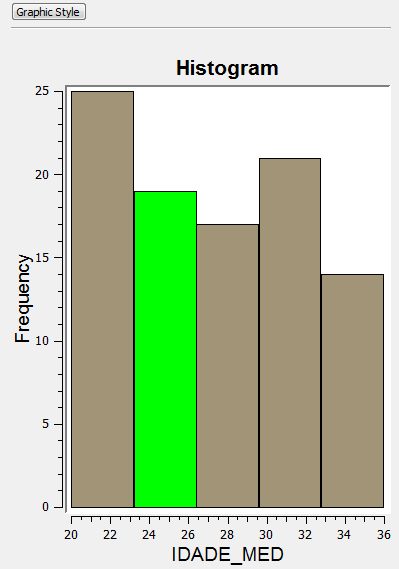

Display
The Chart display interface is used to interact with the plotter area of the graphic. It is possible to highlight data
of interest, zoom in, zoom out and pan over the plotter area (marked with number 5 bellow). The
basic
appearance of the interface is explained bellow:
- Graphic Style button - Opens up the chart style
dialog which allows to change the style of the other items
- Title - Chat title
- Y Axis label
- X Axis label
- Plot area - The area where the chart is plotted.
The following steps will
explain how to highlight objects over the plot area (5).
Highlight
The highlight function allows
the user to highlight data of particular
interest. The way to highlight the data will depend on the type of
chart being shown on the display.
Histogram Highlight
To
highlight a histogram interval simply click on the desired
interval and all data contained in it will be highlighted on the chart and
any other interface showing related data.
For example, clicking on the IDADE_MED interval that corresponds to
values between 24 and 26 years old, will highlight the histogram
bar and also the corresponding objects at the map display and at
the table.

It is also possible to highlight more intervals once one has already
been highlighted. In this case, the newly selected interval will be
added to the previous. To do that hold the Ctrl or Shift button while clicking on the interval of choice.
For example, add the interval that corresponds to values between 28
and 30 years old and see the results at the map and table.
It worth mention that the highlight can also start from the map
display or table. Thus, if some objects are selected over the map
display, the same objects will be highlighted over the histogram and
table.
Scatter Highlight
To
highlight a scatter interval click and drag the mouse
button
over the scatter plot area and a rectangle will be drawn, adjust its size to contain all the
points of interest and all data contained in it will be highlighted on
the chart and
any other interface
displaying data
related to it (such as the map
display or table).
For example, drawing a rectangle that contains years of study between 7
and 8 and family income between two thousand and three thousand will be
highlighted in green at the scatter plot, map display and table (only
some lines).
It is also possible to highlight more intervals once one has already
been highlighted, in this case, the newly selected interval will be
added to the previous selection.To do that hold the Ctrl or Shift button while drawing the new rectangle of choice.
In any chart type, clicking on an empty space over the plot area removes all selected
objects.
Zoom
Zooming in on a chart can be useful when the data being displayed
contains to many intervals or points. In order to zoom in, roll
the middle mouse button forward. To zoom out, roll the middle mouse
button backwards.
Pan
It is also possible to pan the chart Display
to check the data of a
specific point that is out of the visible area (for example after a
zoom). To do that, simply hold the middle button and drag the
mouse to the desired spot on the display.